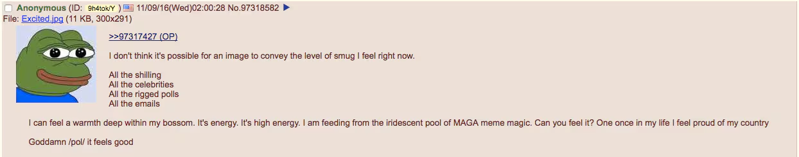

ARCHIVE ITEM · MEME_US2016_006
MEME_US2016_006
The metadata describes this as a “God Emperor Trump” image and classifies its rhetorical frame as heroization.
US · UNITED STATES
How meme formats, heroic imagery, irony, and participatory fandom helped construct larger-than-life online representations of Donald Trump.
← Back to United States“God Emperor Trump” shows Donald Trump as a powerful, almost mythical ruler. The images often place his face on ornate armour and use grand symbols of power. The style is deliberately exaggerated, turning a political candidate into a character from an epic fantasy.
The meme draws directly on Warhammer 40,000, a science-fiction tabletop game franchise. In that fictional universe, the Emperor of Mankind is an immensely powerful ruler. In June 2015, an early Trump edit using Warhammer imagery appeared on 4chan’s /pol/ board, around the time Trump announced his presidential campaign. The creator of the original post is not known.
The image spread through online Trump-supporting communities and was remixed into different versions. Some people shared it as exaggerated praise; others used the same grand imagery ironically or to comment on the idea of a leader with near-absolute power. Its meaning depends on the version and the person sharing it.
The images below show examples connected to this topic, with links to their recorded sources and additional item details.
ARCHIVE ITEM · MEME_US2016_006
The metadata describes this as a “God Emperor Trump” image and classifies its rhetorical frame as heroization.

ARCHIVE ITEM · MEME_US2016_005
A 4chan post dated in the archive to election night frames the result as a victory and celebrates Trump.